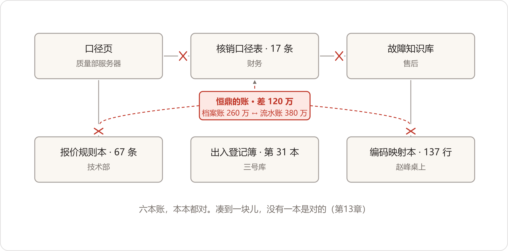

Each to Their Own
1月4日，上班头一天。大区经理们提着行李箱进厂，轮子碾过路上没扫净的碎冰，一路咯噔到发运科跟前——去年的账，就在那儿对。十二月里说定的：一月，账不动，数字办的人跟着录，录出来的数，祝建平签字，才能出他那间屋。
小夏和赵峰轮着去坐了三天。棉门帘一掀还是那股冷风，暖气片上还是烘着两副棉手套。老祝话不多，录一条，他翻本子核一条，核不过的当场划掉重来，本子边上半截铅笔，削得很短，一直攥在他手里。到第三天，三天的数打成一沓，他从头翻到尾，翻完，在最后一页签了名，落了日期。
腊月里盘过一回库。三号库账实头一回对平了——差的几套，白条都在本子上。冯广顺在库房门口喊了一嗓子："平了！"顿了顿，又补半句："三十一本本子的功劳。板上那行，别给我擦了。"
"数是借你们看的。"他把那沓纸推过来，"往后板上在途那一格，跟我这本子对不上的，先来问我，别自己猜。"停了停，又补一句，"借条我就不打了。周总打的。"
华北的大区经理凑在小夏边上看板，看见自己那两张单子在发货和签收中间走着，停了四天，压在集运站，灰牌挂着。他问："这一格，我手机上看得到不？"
"看得到。"小夏给他存了个书签。
又过了两天，夜里的数跑完，看板上，九个环节头一回从头亮到尾，中间没有一格虚线。签收那格亮起来是十二月的事；这回填实的是发货到签收中间那段——在途。多少台在路上，压在哪个站，停了几天，一格一格数得出来。
那天小夏买了砂糖橘，皮照旧搁在暖气片上。陈临把贺主任那页纸从抽屉里拿出来——三堵墙记在一页上，接口的，主数据的，人的——三行都走完了。他把纸折成四折，夹进蓝皮笔记本里，压平。
年结的全量数，是小夏他们在发运科坐镇的那几天，后半夜跑出来的。第二天一早，数字办没什么人，玻璃上的霜花开得正厚，赵峰看供应商那一段，在恒鼎名下停住了。
看板上，恒鼎名下三个编码合是一家——归堆凭的是ERP户名，三个户名都带"恒鼎"俩字——其中一个老编码，去年一年流水一百二十万——偏偏这个编码，映射本上没有主。十二月做对照那阵，他和潘永年看的是档案和合同，这个编码底下的老单子没人翻过。他把老编码的送货单调出来，三张，章是同一个：恒鼎密封件厂；又查了ERP里这个编码建户的年份，2009年——比潘永年档案里那份最早的合同，2014年的恒鼎橡塑，还早五年。
赵峰当天在映射本上添了一行——第一百三十七行，恒鼎，老编码，凭据是三张盖了章的单子。又在微信上知会了复评办的经办霍岩。霍岩回得客气：底稿上周已经报上去了，您这行记下了，下一批复评再改。
1月11日，复评底稿到了财务，年度供应商复评的底稿，应付账龄跟着它编。第二天，韦春霞把账龄拉出来：恒鼎，二百六十万。她再点开看板，三百八十万——差出来的一百二十万，在复评底稿上挂着四个字：查无对照。
又过了一天，这架在潘永年的办公室里当面对了一回。桌上三样东西摆开：复评底稿的打印件，赵峰的黑皮本，一台手提电脑；人到齐——许曼、韦春霞，潘永年、霍岩，陈临、赵峰、小夏，小夏带了本子。屋里暖气半温，谁都没脱大衣。
许曼先开口。"两个数，都挂着恒鼎的名。账龄二百六，看板三百八，差一百二。"她的手指先点底稿，再点电脑屏，"差的一百二，底稿上写的是查无对照。没主的数，我没处挂。今天把这一百二安顿下来；往后财务认哪份，也定下来。"
霍岩二十八九岁，复评经办。他把底稿翻到附页："我是照表办的。十二月发的对照表，恒鼎两个名，我们照着核。ERP里恒鼎三个编码，表上收了两个，第三个——"他把那一行指给众人看，"按复评规矩，查无对照，挂待核实。报告里写明了。"
赵峰把黑皮本摊开，推到桌子中间。"第三个编码，一月六号我添上了，第一百三十七行。"他从手机里调出三张送货单的扫描件，一张一张摆在桌上，"章，恒鼎密封件厂，三张一个章。编码建户2009年，比潘部长的档案早五年。"
潘永年起身开了柜子，抱出一个档案盒，当场翻了起来。合同两份：恒鼎橡塑，2014年；恒鼎密封科技，2023年。"橡塑的、密封科技的，我这儿齐。"他又翻了一遍，合上盒盖，"恒鼎密封件厂——没有。"他想了想，"有地方有。前年清库，注销户、变更以前的老户，全归到负一层库房，编了死档。复评的时候，谁能想到一个活供应商的老名，躺在死档里。"
许曼问赵峰："一百二的凭据，就这三张章？"
"流水是全的，一年二十几笔。章我对过，跟我三月里对华信那十九张一个对法。"赵峰说，"流水不会记错，章也不会。"
"潘部长，这个章，你认不认？"
潘永年把老花镜往上推了推，凑近手机屏幕看了半晌。"认。这家我进厂头几年打过交道，后来转给底下贸易公司走货，户一直没销。"他直起腰，"可我的底稿也是照章办事——照你们那七行的表。"
许曼转过来，看着陈临。
"陈临。十二月那七行，数字办的表，复评办的名头。这本子，"她拍了拍黑皮本，"你们赵峰的。一个数字办，两份对照，自己先差了一百二。"她的声音没抬，一个字一个字放平，"我今天不是来断谁对谁错，我断不了。你们自己人先说说：哪份是准的？"
屋里静了几秒。霍岩翻页的手停在那行"查无对照"上。窗外一辆叉车倒车，蜂鸣响了一阵，过去了。
陈临把两份表拉到自己面前，并排摆开。屋里等着他说话。
"都对。"他说，"也都不全。十二月出表，看的是档案、合同、营业执照——潘部长柜子里有什么，我们看什么。老编码这条，是赵峰这个月从流水里刨出来的，刨出来才知道死档里躺着老名。出表那天，我们谁也没想过下楼去翻死档，包括我。"
"那下一批复评，"霍岩小声问，"我按哪本？"
没人立刻答他。潘永年把档案盒抱起来，放回柜子，关上柜门，才开口。"今天恒鼎，是最后一家落齐凭据的。往后呢？洛轴三个来路，晋南两份档案，下回再冒出第九个、第十个名字，照今天这么办，明年这时候咱们还坐在这儿，换个供应商再来一遍。"他看着陈临，"复评一年一回，映射本一月一动。表跟表之间，谁跟着谁走，得有个说法。这个说法，你们不给，就没人给了。"
许曼把两份表摞在一起，推到陈临面前。
"应急的数，今天定：账龄按三百八改。凭据，赵峰那三张章的扫描件，附在底稿后头，霍岩补一页勘误，报上去。"她站起来拿大衣，"正本的事，过完年，给我一份认得出来的。"
散会，潘永年送到门口，补了一句："再啰嗦一句——别再弄出第三份表。"
月底的快照，赵峰存的是一百三十七行。他在快照页边上注了一行小字：一月，复评未同步。
撞车的事还没消化完，别处接连响了三回。
头一回，响在财务和质量之间，隔着一道年关。晋北集团年底换户名，函是十二月二十八号到的，走销售转给了质量部——客户主数据归郑敏管。一月头几天，郑敏把口径页上晋北那条更新了，函的复印件附在页后。可财务那张《回款核销口径表》第一条，去年七月是从郑敏那页上抄的，写着旧全称。一月十三号，年结的回款核销跑完，十二月底最后三天晋北汇进来的三笔款——集团财务公司切换系统，提前用了新户名——机器按代付对照表匹配不上，三笔全转了人工。老康翻了半宿备查簿，第二天一早，拿着函来找小夏。
"函，销售给了我一份。"他说，"我就纳闷，这么大的事，怎么没人喊一嗓子？一家改名，几家跟着改——谁数过？"
小夏去问。郑敏正在改自己服务器上的页，听完，笔停了。
"我的页我改了，一月初就改了。"她说，"我不知道有人抄了我的页去。抄的时候打个招呼，也不至于今天。"
许曼当天让韦春霞在口径表那条后头添了新全称，末尾添半行：来源，销售转函。韦春霞添完说了句："七月抄的时候，我还想着要不要知会郑部长一声。后头一忙，忘了。"小夏把这一出记在白板角上，字写得很小。
第二回响在报价那头。一月十四号，一张晋北的备件单，底稿打出来，轴承那一行出来俩写法——洛阳轴承，洛轴销售，同一张单，俩名。邵卫东的客户在电话里问："你们家轴承，到底一家供的还是两家供的？"贺春玲拿着这张底稿看了半天，才打电话问赵峰。赵峰在电话里说：映射本里洛轴三行，报价库十月接物料库的时候，只把华信那三个名挂了对照，洛轴的没挂。老秦在边上撂下一句话，贺春玲原样记下来了："写死洛轴。洛轴就是洛轴，走谁家发的货我不管，出了质量问题我才管。"那张单，手工改的。洛轴的对照挂不挂，排到年后。
第三回响在售后和销售之间。一月十五号，元宝山矿上库工打电话到销售内勤，要备件："三号线上那个小烟囱，坏了两只，发三只过来。"内勤先在报价库里查，没有；再到ERP里查小烟囱，没有；查烟囱，也没有。查无可查，单子这才转到售后群。段兴在矿上，回得快："透气帽，JW-32，站上有俩旧的先换上，新的随后。"备件出库单当天从ERP打出来，物料名印的是"呼吸器 JW-32"。两天后货到矿上，库工又打回来一个电话："我报的小烟囱，你们发的呼吸器——是一个东西不？"
回过来的这个电话，是邵卫东接的。段兴在群里发了一行："矿上认小烟囱，厂里认呼吸器，中间隔着一个ERP。"
数字办当天碰头。小夏把三件事一条条写上白板，写完退后两步，看了半天。
"这三个月我一直在想，毛病出在哪。"她平时说话快，这回每个字都放得很慢，"六本账，本本都对。凑到一块儿，没有一本是对的。"
赵峰把话接过去，接得具体："拿这个月说。改一个名——映射本、复评表、报价库、口径页、代付对照、叫法栏，六个地方都得跟着改。改了三处，漏了三处。不是谁懒。是压根没有一处是正本，改的人不知道别处还有一份。"
"我试了。"小夏说，"拿语义相似度，把两份表往一块儿对——试的。十回里七八回能对上，两三回还是得人点头，跟去年四月那回聚类一个毛病。机器认得出长得像，认不出是不是一个。"
"机器的事往后放。"赵峰说，"先得有一本正本。正本不是对出来的，是立出来的——谁立？立了谁认？这话我接不住。"
陈临没接话。他把蓝皮本翻开，翻过"什么算数"那页，新起一页，写了五个字：哪本是正本。写完，把本子合上。
"年后的头一件事。"他说。
1月19、20两天，减速机行业年会在省城开，周建海去了。散会第二天，他背着包直接进了数字办，帽子摘了往桌上一放，包侧兜上还挂着省城宾馆的行李牌，没来得及撕。
"带回来个消息。"他说，"海力达，黄了。"
海力达是同行，做重载减速机的，两家在好几个客户那儿常年对着抢单。周建海的消息来自海力达的营销副总，年会上两人同桌，喝到后半夜，人家说的：前年春天，海力达上了个大项目，挂的名号大——全厂统一知识工程。两年下来，年前，项目组散了。
"钱，据说四百八十万。"周建海说，"东西呢？我那同行说了一句话，我原样学给你们——钱花了，买了一堆文档。"
他掏出小本子，翻开，上面记着几行。"我听完，头一个念头不是幸灾乐祸。"他念自己记的，"我头一个念头是：咱们这一年，跟他像不像？"
细节是隔了一天才补齐的。赵峰的电话响了——海力达的信息化负责人，姓闵，两人三年前在ERP原厂的培训班上同过桌，行业群里一直有联系。老闵知道赵峰在干的是同样的事，电话里没什么遮掩。赵峰把陈临从楼上叫下来，免提摆在桌上；办公室的灯关了大半，就留桌上这一盏。
"项目组的群，昨天解散的。"老闵说。他的声音不高，语速平，一句是一句，像在念别人的总结。
项目是2025年3月立的项，头一年批了四百八十万，咨询、实施，加两台服务器。北京来的咨询公司，进场先访谈，各科室转了两轮，人人填过表。然后，他们关起门建东西。老闵说，他们管那叫总体模型，要把设备、工艺、质量、供应商、标准、档案，全厂的知识全装进去，说全厂的东西都得先有户口。名目定了三百多种，文档写了四百多页。
"我们设备科，等一个查机床档案的口子，等了一年半。"老闵说，"答复永远是那句：底座没建完。"
后期的评审会，业务的人坐十分钟就走。台上投出来的图，红红绿绿抱成一团，没人提问。"不是没问题，是不敢问。问了，显得你落后。"
去年年中，项目组给老板演示过一回。界面好看。真查数——查三号炉一批齿轮的下料单——等了四十分钟，说权限还得现配。"老板的脸，就是从那天沉下去的。"
上个月项目组散伙，咨询撤场，四百多页文档和一堆模型文件锁进共享盘。服务器续费的单子，到现在没人签。老闵自己，上周交了辞职报告。
"我在他们家干了九年，最后两年，陪着建这个。"他在电话那头停了停，"钱花了，东西呢？一堆文档。"
挂电话之前，他问了一句："老赵，你们这一年搞的那些库——站上的、报价的——是真有人用，还是给老板看的？"
"真有人用。"赵峰说，"矿上半夜在查。"
"那你们比我强。"老闵说，"我们这儿，从头到尾，没有一个真用起来的地方。"
电话挂了，屋里静了一阵。赵峰把手机扣在桌上。
"他那个死法，我三月里擦着边。"他说，"总想一张表管全厂。郑敏一句'她明天问什么'，把我问住了，才缩到一台机器一个批次上。他那儿，没人问这句。"
小夏周末没回老家，在网上扒了两天行业论坛和公众号的旧闻。前几年一窝蜂上知识库、上中台的厂子，不止海力达一家：立项轰轰烈烈的通稿还在，验收的动静，一篇没有。她打印了五六页，钉在工位隔板上，旁边写了一行：不是海力达一家。
陈临一个人在办公室坐了一阵。翻开蓝皮本，八月省城带回来那张四折纸从页里滑了出来——纸上三问还在：谁最累，给不给你看，记不记得下来。三问都答过了；第四问是后来才有的，纸上没有：记下来的东西，谁来养。海力达要治的病——账散在各家，各家一个说法——跟他一月里撞的那堵墙，是同一堵。这个方向，他信。死法也摆在明处：先建全厂的名目，业务的人坐不住，一个真场景没落地。统一是对的。怎么统一，他答不上来。白板右下角"佟，回话"三个字底下，他画了道横线。字，他没写。
海力达的事，行业里传得比想象快。1月27日，佟总监的电话打到了陈临手机上。
两人先是拜了个早年，客气了两句。然后佟总监说起了海力达——他的客户群里也传开了。
"陈总，同行的事，我不落井下石。"他说，"就提醒一句：他们死在建底座上，不是死在统一上。账散的病，不会因为没人治，它自己就好了。"
"年前我来不了了。节后我带个新东西过来——这回先不谈平台。您那六本账，一本一本接进来也行，先合出一本底账也行。这一步，不管您最后买不买，总得有人走。我先把这第一步做出来给您看。"
"年后我约您。"陈临说。这句他十二月说过一回，欠了一个月，今天又说了。
1月29日，月度经营分析会。刘振邦把海力达的事端上了桌。他的消息来源他自己交代了——海力达的营销副总，跟他年年展会碰面，年前通过一个长电话。
"我提个事，完了提几个问。"刘振邦说，"同行海力达，前年风风火火上大项目，两年，小五百万，年前散伙。自己建，建出来就是这么个下场。"他环视一圈，"三个问题。第一，咱们这一年，各科室的库建了几个？六个。谁管？一人一本，各管各的。第二，老蔡年底对数的时候跟我提过，一月里财务和看板差了一百二，差在谁身上？数字办自己出的两份表。第三，二月底董事会，年度的账怎么算？是接着零打碎敲，还是定一条路线？我的话搁在这儿：年后董事会，我正式提路线之争。"
老蔡那天在座，从头到尾没说话。听到刘振邦引他年底那句对数的话，他抬了抬眼皮，往硬壳本上记了一笔，把笔搁下了。
没人接话。董鸿章端起茶，没喝，放下了。
"数字办。"他转头看陈临，"二月底，董事会听你年度汇报。你打算讲什么？"
"讲实话。"陈临说，"成了什么，没成什么，钱花在哪儿，还欠什么。"
"行。"董鸿章说，"就讲这个。散会。"
散会出来，刘振邦等在楼梯口的走廊里。他跟陈临并肩下了半层，才开口。
"老陈，我把话搁在会上，不是搞突然袭击。"他说，"海力达摆在明处，你那两份表也摆在明处——我不提，董事会上别人也会提。你要有牌，早点出。"
"我有牌。"陈临说，"还没凑齐。"
刘振邦往下走了两级台阶，站住，回头看了他一眼。
"那就快点。董事会不等人。"
那天晚上，陈临在办公室坐到暖气片的声响停了——锅炉房夜里降压。他把六本账的现状一笔一笔写成一页纸，写到末尾，"正本"两个字写下来，后头还是空的。他锁了门回家，路上把一件事定了：年前，下档案室去一趟。
2月4日，腊月二十八，节前最后一个整天。行政楼里发年货，走廊上摞着米面油的纸箱；食堂门口贴了通知：廿九中午加餐，下午放假。厂区门口的灯笼头天挂上了，装配车间赶完年前最后一批活，天车也停了。
陈临下了负一层。楼梯拐角的感应灯还是那盏，人走到跟前，啪一声亮。纸味，潮气，一点樟脑，还是那几样。
门虚掩着。叶老在长案后头，案上摊着那个铁皮饼干盒，盖开着，他正把一摞卡片理顺，橡皮筋旧的抽出来，换上新的——旧的那根先套在手腕上，新的绕两道，试一试松紧，才松手。登记簿摊在门边小桌上，今年的记录一行——质量部一月来调过一回档。陈临接过来，签了第二行。
"年前还下来。"叶老头没抬，"坐。暖壶自己倒。"
陈临没倒水。他坐下，把事情讲了。拣要紧的讲，讲得慢。这一年，各口长出来的家什：质量一页口径，财务一张核销口径表，售后一个故障库带着叫法栏，报价两个规则本，仓储三十一本登记簿，看板底下一本映射本。六本账，各在各家，都活着，也都好用。一月里，数字办自己出的两份表打了一架，差了一百二；后头三天，财务、报价、售后，接连响了三回。同行海力达，两年轻了小五百万，建全厂统一的知识工程，年前散了伙。有厂商劝他买平台，统一纳管。二月二十六，董事会要算总账。
叶老听着，手上的活没停，橡皮筋一根一根换。听完，他把最后一摞卡放进盒里，扣上盖，两只手搭在盒盖上——跟去年四月那回一个姿势。
先开的口是问话。
"海力达建那个库以前，他们厂里，几本账？"
陈临愣了一下。"不知道。没打听。"
"连自己有几本账都没数过，就想换账本。"叶老的手指在盒盖上点了两下，"你们数过了，六本。比我那年强。"
他把老花镜摘下来，挂在衬衫第二颗扣子上。
"你说的这个病，我们所得过一回。"他说，"八五年，我进所第三年。"
设计院十一个室，各室一柜卡片目录，各室一套叫法。工艺室的卡上写齿轮箱，矿山室写减速机，标准化室按标准号走，翻译室一套俄文一套中文。查一份东西，跑三个室，仨说法，还都对不上。院里下了决心：合卡。把十一柜卡，合成一套总目。
"头一步，不是合，是对词。"叶老说，"每室出一个人，借了间放仪器的空屋，把各室的卡一摞一摞抱过去。同一份东西，各家卡片上写的名，先抄出来，列在一起。列了三天，列满了一块黑板，黑板不够，又搬了块大的来——"
他停在这儿。看了一眼案上自己那个本子，把铁皮盒抱起来，放到案子底下，蹲下去推到最里头，胳膊伸直了才撒手。
"这段事长。三天三夜讲不完，也不是三天三夜的事——后头还有好几年。年前你忙，我也得回去收拾屋子。"他直起身，"过完年，出了十五，你挑个整下午下来。我从头给你讲。怎么对的词，怎么吵的架，怎么定的一行注。"
"海力达那个，"陈临问，"要是按您那套来——"
"我不知道人家的事。"叶老摆了下手，"我只知道我亲历的。"
陈临起身要走，走到门边，想起一件事。
"您那张卡，还在我桌上压着。"他说，"我们售后那个叫法栏——透气帽底下挂着呼吸器、小烟囱——就是照那张卡'代'字那一行做的。站上娃娃们报小烟囱，售后那个库里，敲小烟囱出的是透气帽。"
叶老点点头，没夸。
"四十年前的土办法。"他说，"卡你留着用。盒里有复份。"
他把陈临送到门口。门边上，他站住了。
"先透一句。"他说，"那回合卡——头一年，黄了。"
"为什么黄？"
叶老把门边那张"阅档请登记"的打印纸按了按。四个角的胶带翘起来一角，他用指头抹平。
"十五以后。"
他转身回长案去了。陈临上楼，走到楼梯拐角，感应灯在他身后啪一声灭了。
回到办公室，他把蓝皮本翻开，在那页"哪本是正本"底下添了一行：出了十五，档案室。
腊月二十九，今年没有年三十，廿九就是三十。厂区已经松下来了，各屋的门都开着，说话声比平时高；班只上到晌午，加过餐，放了假。
九点四十，邵卫东的邮箱先到了一封。瀚风风电，供应商管理部发的——风电整机厂，周建海线上的头号客户，邵卫东跑这条线跑了六七年，年度审核的函历来走客户口，收件人写的都是他，抄送里有董鸿章和周建海。邵卫东正核着节前最后两张发货单，看见是瀚风的，转发进了数字办的群，附了三个字：看着急。
邮件正文不长，附件一份，《2027年度供应商审核暨一级供应商准入评审细则（试行）》。核心两条，抄在这里：
十点二十，OA上又弹出一封，董办的红头：二届董事会2027年度会议，2月26日召开。议程第三项，年度审计报告，报告人老蔡；议程第五项，数字化年度报告，报告人陈临。
董鸿章把瀚风那封转给了陈临，正文一个字没写，只在标题栏添了半句：年后上班头一天，先说这个。
又过了小半个钟头，小夏和赵峰把两份通知的打印件读完了。办公室里就他们三个，暖气烧得足，窗上的霜化了一半。
赵峰先说话，说的还是技术："4.3，任一产品，从头查到尾。三月那道追溯题的放大版——链，我搭得起；名字这一关过不去。查到供应商那一步，一屏三个恒鼎，你给审核员看哪个？"
"4.4我看了。"小夏说，"知识体系化管理——知识资产咱们有，六本。管理制度——"她把那页纸往桌上一放，"就冲一月那两份表，这一栏我不敢填。"
陈临没说话。他把两份打印件并排，用磁扣钉在白板两侧。白板中间，年底写下的那六行账还留着，没人擦过。他拿起笔，在右下角那行小字底下——"一月，借账；复评，三家；佟，回话"——又添了一行：
二月廿六，董事会。三月卅一，瀚风预审。五月十，现场。
写完，他把笔帽扣上。楼下食堂加餐的动静传上来，搪瓷盆磕在一起，一阵一阵的。
"陈主任，"小夏收拾包，问，"过年您干嘛？"
"十五以前陪家里人。"陈临关了一半的灯，"十五以后，听课去。"

开年以来，合账记几笔：